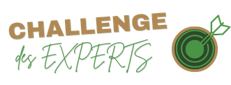

Deux jeux à faire en même temps, au fil de votre balade. Scannez les pancartes dans l'ordre de votre choix et passez d'un jeu à l'autre quand vous voulez : chaque jeu garde votre progression.
Jeu permanent

L'histoire du thé et de Grand-Coude en 17 pancartes. Répondez aux questions et décodez les mots mystères.
Partez à la rencontre des trésors vivants de La Réunion : faune et flore endémiques menacées, fruits et légumes lontan. 17 pancartes, 17 espèces à retrouver.
 Le Zarlor Vivant
Le Zarlor Vivant